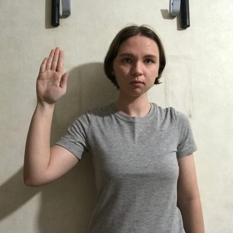
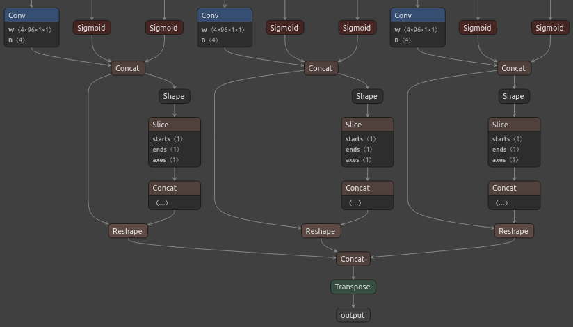
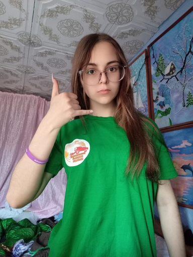
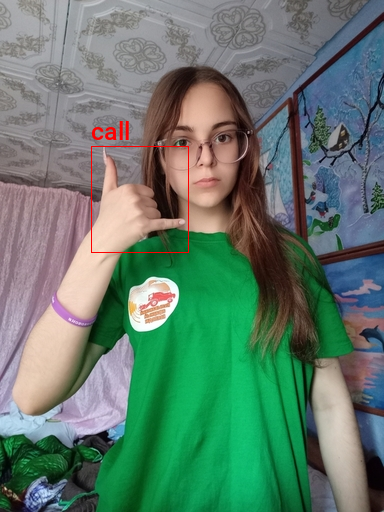
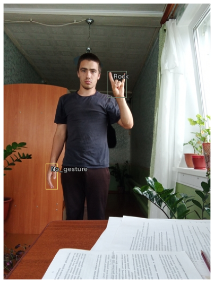
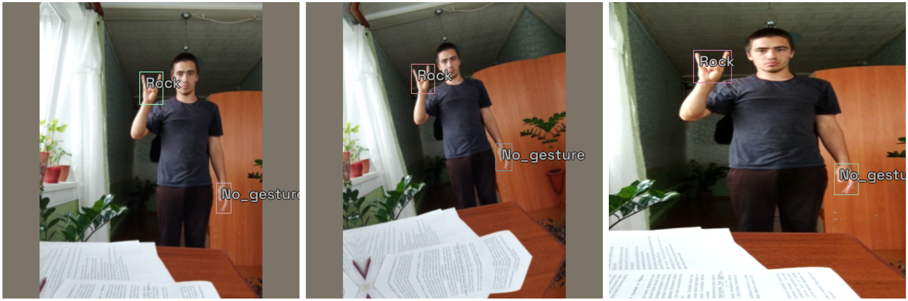
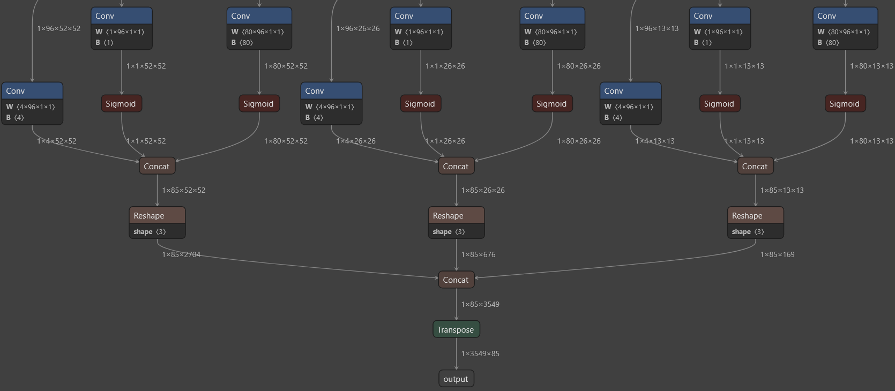
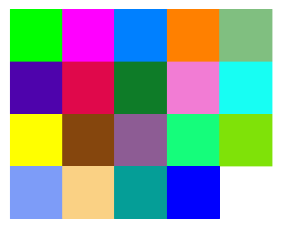
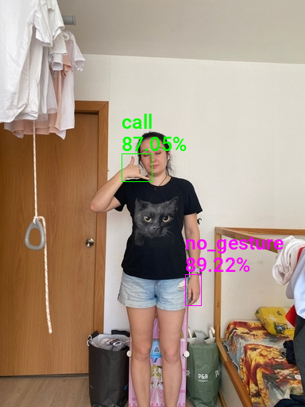

End-to-End Object Detection for Unity With IceVision and OpenVINO Pt. 1
- Introduction
- Overview
- Setup Conda Environment
- Import Dependencies
- Configure Kaggle API
- Download the Dataset
- Inspect the Dataset
- Create Dataset Parser
- Define DataLoader Objects
- Finetune the Model
- Prepare Model for Export
- Export the Model
- Verify OpenVINO Inference
- Define Post-processing Steps
- Generate Colormap
- Summary
Introduction
In this tutorial series, we will walk through training an object detector using the IceVision library. We will then implement the trained model in a Unity game engine project using OpenVINO, an open-source toolkit for optimizing model inference.
The tutorial uses a downscaled subsample of HaGRID (HAnd Gesture Recognition Image Dataset). The dataset contains annotated sample images for 18 distinct hand gestures and an additional no_gesture class to account for idle hands.
Reference Images
| Class | Image |
|---|---|
| call |

|
| dislike |

|
| fist |

|
| four |

|
| like |

|
| mute |

|
| ok |

|
| one |

|
| palm |

|
| peace |

|
| peace_inverted | |
| rock |

|
| stop |  |
| stop_inverted |

|
| three |

|
| three2 |

|
| two_up | |
| two_up_inverted |

|
One could use a model trained on this dataset to map hand gestures and locations to user input in Unity.
Unity Demo
Overview
Part 1 covers finetuning a YOLOX Tiny model using the IceVision library and exporting it to OpenVINO’s Intermediate Representation (IR) format. The training code is available in the Jupyter notebook linked below, and links for training on Google Colab and Kaggle are also available below.
| Jupyter Notebook | Colab | Kaggle |
|---|---|---|
| GitHub Repository | Open In Colab |  |
Note: The free GPU tier for Google Colab takes approximately 11 minutes per epoch, while the free GPU tier for Kaggle Notebooks takes around 15 minutes per epoch.
Setup Conda Environment
The IceVision library builds upon specific versions of libraries like fastai and mmdetection, and the cumulative dependency requirements mean it is best to use a dedicated virtual environment. Below are the steps to create a virtual environment using Conda. Be sure to execute each command in the provided order.
Important: IceVision currently only supports Linux/macOS. Try using WSL (Windows Subsystem for Linux) if training locally on Windows.
Install CUDA Toolkit
You might need to install the CUDA Toolkit on your system if you plan to run the training code locally. CUDA requires an Nvidia GPU. Version 11.1.0 of the toolkit is available at the link below. Both Google Colab and Kaggle Notebooks already have CUDA installed.
Conda environment setup steps
conda create --name icevision python==3.8
conda activate icevision
pip install torch==1.10.0+cu111 torchvision==0.11.1+cu111 -f https://download.pytorch.org/whl/torch_stable.html
pip install mmcv-full==1.3.17 -f https://download.openmmlab.com/mmcv/dist/cu111/torch1.10.0/index.html
pip install mmdet==2.17.0
pip install icevision==0.11.0
pip install icedata==0.5.1
pip install setuptools==59.5.0
pip install openvino-dev
pip install distinctipy
pip install jupyter
pip install onnxruntime
pip install onnx-simplifier
pip install kaggleThe mmdet package contains the pretrained YOLOX Tiny model we will finetune with IceVision. The package depends on the mmcv-full library, which is picky about the CUDA version used by PyTorch. We need to install the PyTorch version with the exact CUDA version expected by mmcv-full.
The icevision package provides the functionality for data curation, data transforms, and training loops we’ll use to train the model. The icedata package provides the functionality we’ll use to create a custom parser to read the dataset.
The openvino-dev pip package contains the model-conversion script to convert trained models from ONNX to OpenVINO’s IR format.
We’ll use the distinctipy pip package to generate a visually distinct colormap for drawing bounding boxes on images.
The ONNX models generated by PyTorch are not always the most concise. We can use the onnx-simplifier package to tidy up the exported model. This step is entirely optional.
Original ONNX model (Netron)

Simplified ONNX model (Netron)

Colab and Kaggle Setup Requirements
When running the training code on Google Colab and Kaggle Notebooks, we need to uninstall several packages before installing IceVision and its dependencies to avoid conflicts. The platform-specific setup steps are at the top of the notebooks linked above.
Import Dependencies
IceVision will download some additional resources the first time we import the library.
Import IceVision library
from icevision.all import *Import and configure Pandas
import pandas as pd
pd.set_option('max_colwidth', None)
pd.set_option('display.max_rows', None)
pd.set_option('display.max_columns', None)Configure Kaggle API
The Kaggle API tool requires an API Key for a Kaggle account. Sign in or create a Kaggle account using the link below, then click the Create New API Token button.
- Kaggle Account Settings: https://www.kaggle.com/me/account

Enter Kaggle username and API token
creds = '{"username":"","key":""}'Save Kaggle credentials if none are present * Source: https://github.com/fastai/fastbook/blob/master/09_tabular.ipynb
cred_path = Path('~/.kaggle/kaggle.json').expanduser()
# Save API key to a json file if it does not already exist
if not cred_path.exists():
cred_path.parent.mkdir(exist_ok=True)
cred_path.write_text(creds)
cred_path.chmod(0o600)Import Kaggle API
from kaggle import apiDownload the Dataset
Now that we have our Kaggle credentials set, we need to define the dataset and where to store it. I made two versions of the dataset available on Kaggle. One contains approximately thirty thousand training samples, and the other has over one hundred and twenty thousand.
Define path to dataset
We’ll use the default archive and data folders for the fastai library (installed with IceVision) to store the compressed and uncompressed datasets.
from fastai.data.external import URLsdataset_name = 'hagrid-sample-30k-384p'
# dataset_name = 'hagrid-sample-120k-384p'
kaggle_dataset = f'innominate817/{dataset_name}'
archive_dir = URLs.path()
dataset_dir = archive_dir/'../data'
archive_path = Path(f'{archive_dir}/{dataset_name}.zip')
dataset_path = Path(f'{dataset_dir}/{dataset_name}')Define method to extract the dataset from an archive file
def file_extract(fname, dest=None):
"Extract `fname` to `dest` using `tarfile` or `zipfile`."
if dest is None: dest = Path(fname).parent
fname = str(fname)
if fname.endswith('gz'): tarfile.open(fname, 'r:gz').extractall(dest)
elif fname.endswith('zip'): zipfile.ZipFile(fname ).extractall(dest)
else: raise Exception(f'Unrecognized archive: {fname}')Download the dataset if it is not present
The archive file for the 30K dataset is 4GB, so we don’t want to download it more than necessary.
if not archive_path.exists():
api.dataset_download_cli(kaggle_dataset, path=archive_dir)
file_extract(fname=archive_path, dest=dataset_dir)Inspect the Dataset
We can start inspecting the dataset once it finishes downloading.
dir_content = list(dataset_path.ls())
annotation_dir = dataset_path/'ann_train_val'
dir_content.remove(annotation_dir)
img_dir = dir_content[0]
annotation_dir, img_dir(Path('/home/innom-dt/.fastai/archive/../data/hagrid-sample-30k-384p/ann_train_val'),
Path('/home/innom-dt/.fastai/archive/../data/hagrid-sample-30k-384p/hagrid_30k'))Inspect the annotation folder
The bounding box annotations for each image are stored in JSON files organized by object class. The files contain annotations for all 552,992 images from the full HaGRID dataset.
pd.DataFrame([file.name for file in list(annotation_dir.ls())])| 0 | |
|---|---|
| 0 | call.json |
| 1 | dislike.json |
| 2 | fist.json |
| 3 | four.json |
| 4 | like.json |
| 5 | mute.json |
| 6 | ok.json |
| 7 | one.json |
| 8 | palm.json |
| 9 | peace.json |
| 10 | peace_inverted.json |
| 11 | rock.json |
| 12 | stop.json |
| 13 | stop_inverted.json |
| 14 | three.json |
| 15 | three2.json |
| 16 | two_up.json |
| 17 | two_up_inverted.json |
Inspect the image folder
The sample images are stored in folders separated by object class.
pd.DataFrame([folder.name for folder in list(img_dir.ls())])| 0 | |
|---|---|
| 0 | train_val_call |
| 1 | train_val_dislike |
| 2 | train_val_fist |
| 3 | train_val_four |
| 4 | train_val_like |
| 5 | train_val_mute |
| 6 | train_val_ok |
| 7 | train_val_one |
| 8 | train_val_palm |
| 9 | train_val_peace |
| 10 | train_val_peace_inverted |
| 11 | train_val_rock |
| 12 | train_val_stop |
| 13 | train_val_stop_inverted |
| 14 | train_val_three |
| 15 | train_val_three2 |
| 16 | train_val_two_up |
| 17 | train_val_two_up_inverted |
Get image file paths
We can use the get_image_file method to get the full paths for every image file in the image directory.
files = get_image_files(img_dir)
len(files)31833Inspect files
pd.DataFrame([files[0], files[-1]])| 0 | |
|---|---|
| 0 | /home/innom-dt/.fastai/archive/../data/hagrid-sample-30k-384p/hagrid_30k/train_val_call/00005c9c-3548-4a8f-9d0b-2dd4aff37fc9.jpg |
| 1 | /home/innom-dt/.fastai/archive/../data/hagrid-sample-30k-384p/hagrid_30k/train_val_two_up_inverted/fff4d2f6-9890-4225-8d9c-73a02ba8f9ac.jpg |
Inspect one of the training images
The sample images are all downscaled to 384p.
import PIL
img = PIL.Image.open(files[0]).convert('RGB')
print(f"Image Dims: {img.shape}")
imgImage Dims: (512, 384)
Create a dictionary that maps image names to file paths
Let’s create a dictionary to quickly obtain full image file paths, given a file name. We’ll need this later.
img_dict = {file.name.split('.')[0] : file for file in files}
list(img_dict.items())[0]('00005c9c-3548-4a8f-9d0b-2dd4aff37fc9',
Path('/home/innom-dt/.fastai/archive/../data/hagrid-sample-30k-384p/hagrid_30k/train_val_call/00005c9c-3548-4a8f-9d0b-2dd4aff37fc9.jpg'))Get list of annotation file paths
import os
from glob import globannotation_paths = glob(os.path.join(annotation_dir, "*.json"))
annotation_paths['/home/innom-dt/.fastai/archive/../data/hagrid-sample-30k-384p/ann_train_val/fist.json',
'/home/innom-dt/.fastai/archive/../data/hagrid-sample-30k-384p/ann_train_val/one.json',
'/home/innom-dt/.fastai/archive/../data/hagrid-sample-30k-384p/ann_train_val/rock.json',
'/home/innom-dt/.fastai/archive/../data/hagrid-sample-30k-384p/ann_train_val/stop_inverted.json',
'/home/innom-dt/.fastai/archive/../data/hagrid-sample-30k-384p/ann_train_val/like.json',
'/home/innom-dt/.fastai/archive/../data/hagrid-sample-30k-384p/ann_train_val/two_up.json',
'/home/innom-dt/.fastai/archive/../data/hagrid-sample-30k-384p/ann_train_val/two_up_inverted.json',
'/home/innom-dt/.fastai/archive/../data/hagrid-sample-30k-384p/ann_train_val/peace.json',
'/home/innom-dt/.fastai/archive/../data/hagrid-sample-30k-384p/ann_train_val/stop.json',
'/home/innom-dt/.fastai/archive/../data/hagrid-sample-30k-384p/ann_train_val/four.json',
'/home/innom-dt/.fastai/archive/../data/hagrid-sample-30k-384p/ann_train_val/dislike.json',
'/home/innom-dt/.fastai/archive/../data/hagrid-sample-30k-384p/ann_train_val/palm.json',
'/home/innom-dt/.fastai/archive/../data/hagrid-sample-30k-384p/ann_train_val/call.json',
'/home/innom-dt/.fastai/archive/../data/hagrid-sample-30k-384p/ann_train_val/three2.json',
'/home/innom-dt/.fastai/archive/../data/hagrid-sample-30k-384p/ann_train_val/ok.json',
'/home/innom-dt/.fastai/archive/../data/hagrid-sample-30k-384p/ann_train_val/mute.json',
'/home/innom-dt/.fastai/archive/../data/hagrid-sample-30k-384p/ann_train_val/three.json',
'/home/innom-dt/.fastai/archive/../data/hagrid-sample-30k-384p/ann_train_val/peace_inverted.json']Create annotations dataframe
Next, we’ll read all the image annotations into a single Pandas DataFrame and filter out annotations for images not present in the current subsample.
cls_dataframes = (pd.read_json(f).transpose() for f in annotation_paths)
annotation_df = pd.concat(cls_dataframes, ignore_index=False)
annotation_df = annotation_df.loc[list(img_dict.keys())]
annotation_df.head()| bboxes | labels | leading_hand | leading_conf | user_id | |
|---|---|---|---|---|---|
| 00005c9c-3548-4a8f-9d0b-2dd4aff37fc9 | [[0.23925175, 0.28595301, 0.25055143, 0.20777627]] | [call] | right | 1 | 5a389ffe1bed6660a59f4586c7d8fe2770785e5bf79b09334aa951f6f119c024 |
| 0020a3db-82d8-47aa-8642-2715d4744db5 | [[0.5801012999999999, 0.53265105, 0.14562138, 0.12286348]] | [call] | left | 1 | 0d6da2c87ef8eabeda2dcfee2dc5b5035e878137a91b149c754a59804f3dce32 |
| 004ac93f-0f7c-49a4-aadc-737e0ad4273c | [[0.46294793, 0.26419774, 0.13834939000000002, 0.10784189]] | [call] | right | 1 | d50f05d9d6ca9771938cec766c3d621ff863612f9665b0e4d991c086ec04acc9 |
| 006cac69-d3f0-47f9-aac9-38702d038ef1 | [[0.38799208, 0.44643898, 0.27068787, 0.18277858]] | [call] | right | 1 | 998f6ad69140b3a59cb9823ba680cce62bf2ba678058c2fc497dbbb8b22b29fe |
| 00973fac-440e-4a56-b60c-2a06d5fb155d | [[0.40980118, 0.38144198, 0.08338464, 0.06229785], [0.6122035100000001, 0.6780825500000001, 0.04700606, 0.07640522]] | [call, no_gesture] | right | 1 | 4bb3ee1748be58e05bd1193939735e57bb3c0ca59a7ee38901744d6b9e94632e |
Notice that one of the samples contains a no_gesture label to identify an idle hand in the image.
Inspect annotation data for sample image
We can retrieve the annotation data for a specific image file using its name.
file_id = files[0].name.split('.')[0]
file_id'00005c9c-3548-4a8f-9d0b-2dd4aff37fc9'The image file names are the index values for the annotation DataFrame.
annotation_df.loc[file_id].to_frame()| 00005c9c-3548-4a8f-9d0b-2dd4aff37fc9 | |
|---|---|
| bboxes | [[0.23925175, 0.28595301, 0.25055143, 0.20777627]] |
| labels | [call] |
| leading_hand | right |
| leading_conf | 1 |
| user_id | 5a389ffe1bed6660a59f4586c7d8fe2770785e5bf79b09334aa951f6f119c024 |
The bboxes entry contains the [top-left-X-position, top-left-Y-position, width, height] information for any bounding boxes. The values are scaled based on the image dimensions. We multiply top-left-X-position and width values by the image width and multiply top-left-Y-position and height values by the image height to obtain the actual values.
Download font file
We need a font file to annotate the images with class labels. We can download one from Google Fonts.
font_file = 'KFOlCnqEu92Fr1MmEU9vAw.ttf'
if not os.path.exists(font_file):
!wget https://fonts.gstatic.com/s/roboto/v30/$font_fileAnnotate sample image
from PIL import ImageDrawwidth, height = img.size
annotated_img = img.copy()
draw = ImageDraw.Draw(annotated_img)
fnt_size = 25
annotation = annotation_df.loc[file_id]
for i in range(len(annotation['labels'])):
x, y, w, h = annotation['bboxes'][i]
x *= width
y *= height
w *= width
h *= height
shape = (x, y, x+w, y+h)
draw.rectangle(shape, outline='red')
fnt = PIL.ImageFont.truetype(font_file, fnt_size)
draw.multiline_text((x, y-fnt_size-5), f"{annotation['labels'][i]}", font=fnt, fill='red')
print(annotated_img.size)
annotated_img(384, 512)
Create a class map
We need to provide IceVision with a class map that maps index values to unique class names.
labels = annotation_df['labels'].explode().unique().tolist()
labels['call',
'no_gesture',
'dislike',
'fist',
'four',
'like',
'mute',
'ok',
'one',
'palm',
'peace',
'peace_inverted',
'rock',
'stop',
'stop_inverted',
'three',
'three2',
'two_up',
'two_up_inverted']IceVision adds an additional background class at index 0.
class_map = ClassMap(labels)
class_map<ClassMap: {'background': 0, 'call': 1, 'no_gesture': 2, 'dislike': 3, 'fist': 4, 'four': 5, 'like': 6, 'mute': 7, 'ok': 8, 'one': 9, 'palm': 10, 'peace': 11, 'peace_inverted': 12, 'rock': 13, 'stop': 14, 'stop_inverted': 15, 'three': 16, 'three2': 17, 'two_up': 18, 'two_up_inverted': 19}>Note: The
backgroundclass is not included in the final model.
Create Dataset Parser
Now we can create a custom Parser class that tells IceVision how to read the dataset.
View template for an object detection record
template_record = ObjectDetectionRecord()
template_recordBaseRecord
common:
- Image size None
- Record ID: None
- Filepath: None
- Img: None
detection:
- Class Map: None
- Labels: []
- BBoxes: []View template for an object detection parser
Parser.generate_template(template_record)class MyParser(Parser):
def __init__(self, template_record):
super().__init__(template_record=template_record)
def __iter__(self) -> Any:
def __len__(self) -> int:
def record_id(self, o: Any) -> Hashable:
def parse_fields(self, o: Any, record: BaseRecord, is_new: bool):
record.set_img_size(<ImgSize>)
record.set_filepath(<Union[str, Path]>)
record.detection.set_class_map(<ClassMap>)
record.detection.add_labels(<Sequence[Hashable]>)
record.detection.add_bboxes(<Sequence[BBox]>)Define custom parser class
As mentioned earlier, we need the dimensions for an image to scale the corresponding bounding box information. The dataset contains images with different resolutions, so we need to check for each image.
class HagridParser(Parser):
def __init__(self, template_record, annotations_df, img_dict, class_map):
super().__init__(template_record=template_record)
self.img_dict = img_dict
self.df = annotations_df
self.class_map = class_map
def __iter__(self) -> Any:
for o in self.df.itertuples(): yield o
def __len__(self) -> int:
return len(self.df)
def record_id(self, o: Any) -> Hashable:
return o.Index
def parse_fields(self, o: Any, record: BaseRecord, is_new: bool):
filepath = self.img_dict[o.Index]
width, height = PIL.Image.open(filepath).convert('RGB').size
record.set_img_size(ImgSize(width=width, height=height))
record.set_filepath(filepath)
record.detection.set_class_map(self.class_map)
record.detection.add_labels(o.labels)
bbox_list = []
for i, label in enumerate(o.labels):
x = o.bboxes[i][0]*width
y = o.bboxes[i][1]*height
w = o.bboxes[i][2]*width
h = o.bboxes[i][3]*height
bbox_list.append( BBox.from_xywh(x, y, w, h))
record.detection.add_bboxes(bbox_list)
Create a custom parser object
parser = HagridParser(template_record, annotation_df, img_dict, class_map)
len(parser)31833Parse annotations to create records
We’ll randomly split the samples into training and validation sets.
# Randomly split our data into train/valid
data_splitter = RandomSplitter([0.8, 0.2])
train_records, valid_records = parser.parse(data_splitter, cache_filepath=f'{dataset_name}-cache.pkl')Inspect training records
train_records[0]BaseRecord
common:
- Filepath: /mnt/980SSD_1TB_2/Datasets/hagrid-sample-30k-384p/hagrid_30k/train_val_one/2507aacb-43d2-4114-91f1-008e3c7a181c.jpg
- Img: None
- Record ID: 2507aacb-43d2-4114-91f1-008e3c7a181c
- Image size ImgSize(width=640, height=853)
detection:
- BBoxes: [<BBox (xmin:153.0572608, ymin:197.40873228, xmax:213.5684992, ymax:320.45228481000004)>, <BBox (xmin:474.20276479999995, ymin:563.67557885, xmax:520.8937472, ymax:657.61167499)>]
- Class Map: <ClassMap: {'background': 0, 'call': 1, 'no_gesture': 2, 'dislike': 3, 'fist': 4, 'four': 5, 'like': 6, 'mute': 7, 'ok': 8, 'one': 9, 'palm': 10, 'peace': 11, 'peace_inverted': 12, 'rock': 13, 'stop': 14, 'stop_inverted': 15, 'three': 16, 'three2': 17, 'two_up': 18, 'two_up_inverted': 19}>
- Labels: [9, 2]show_record(train_records[0], figsize = (10,10), display_label=True )
show_records(train_records[1:4], ncols=3,display_label=True)
Define DataLoader Objects
The YOLOX model examines an input image using the stride values [8, 16, 32] to detect objects of various sizes.
The max number of detections depends on the input resolution and these stride values. Given a 384x512 image, the model will make (384/8)*(512/8) + (384/16)*(512/16) + (384/32)*(512/32) = 4032 predictions. Although, many of those predictions get filtered out during post-processing.
Here, we can see the difference in results when using a single stride value in isolation with a YOLOX model trained on the COCO dataset.
Stride 8

Stride 16

Stride 32

Define stride values
strides = [8, 16, 32]
max_stride = max(strides)Select a multiple of the max stride value as the input resolution
We need to set the input height and width to multiples of the highest stride value (i.e., 32).
[max_stride*i for i in range(7,21)][224, 256, 288, 320, 352, 384, 416, 448, 480, 512, 544, 576, 608, 640] Define input resolution
image_size = 384
presize = 512Note: You can lower the image_size to reduce training time at the cost of a potential decrease in accuracy.
Define Transforms
IceVision provides several default methods for data augmentation to help the model generalize. It automatically updates the bounding box information for an image based on the applied augmentations.
pd.DataFrame(tfms.A.aug_tfms(size=image_size, presize=presize))| 0 | |
|---|---|
| 0 | SmallestMaxSize(always_apply=False, p=1, max_size=512, interpolation=1) |
| 1 | HorizontalFlip(always_apply=False, p=0.5) |
| 2 | ShiftScaleRotate(always_apply=False, p=0.5, shift_limit_x=(-0.0625, 0.0625), shift_limit_y=(-0.0625, 0.0625), scale_limit=(-0.09999999999999998, 0.10000000000000009), rotate_limit=(-15, 15), interpolation=1, border_mode=4, value=None, mask_value=None) |
| 3 | RGBShift(always_apply=False, p=0.5, r_shift_limit=(-10, 10), g_shift_limit=(-10, 10), b_shift_limit=(-10, 10)) |
| 4 | RandomBrightnessContrast(always_apply=False, p=0.5, brightness_limit=(-0.2, 0.2), contrast_limit=(-0.2, 0.2), brightness_by_max=True) |
| 5 | Blur(always_apply=False, p=0.5, blur_limit=(1, 3)) |
| 6 | OneOrOther([RandomSizedBBoxSafeCrop(always_apply=False, p=0.5, height=384, width=384, erosion_rate=0.0, interpolation=1),LongestMaxSize(always_apply=False, p=1, max_size=384, interpolation=1),], p=0.5) |
| 7 | PadIfNeeded(always_apply=False, p=1.0, min_height=384, min_width=384, pad_height_divisor=None, pad_width_divisor=None, border_mode=0, value=[124, 116, 104], mask_value=None) |
pd.DataFrame(tfms.A.resize_and_pad(size=image_size))| 0 | |
|---|---|
| 0 | LongestMaxSize(always_apply=False, p=1, max_size=384, interpolation=1) |
| 1 | PadIfNeeded(always_apply=False, p=1.0, min_height=384, min_width=384, pad_height_divisor=None, pad_width_divisor=None, border_mode=0, value=[124, 116, 104], mask_value=None) |
train_tfms = tfms.A.Adapter([*tfms.A.aug_tfms(size=image_size, presize=presize), tfms.A.Normalize()])
valid_tfms = tfms.A.Adapter([*tfms.A.resize_and_pad(image_size), tfms.A.Normalize()])Get normalization stats
We can extract the normalization stats from the tfms.A.Normalize() method for future use. We’ll use these same stats when performing inference with the trained model.
mean = tfms.A.Normalize().mean
std = tfms.A.Normalize().std
mean, std((0.485, 0.456, 0.406), (0.229, 0.224, 0.225))Define Datasets
train_ds = Dataset(train_records, train_tfms)
valid_ds = Dataset(valid_records, valid_tfms)
train_ds, valid_ds(<Dataset with 25466 items>, <Dataset with 6367 items>)Apply augmentations to a training sample
samples = [train_ds[0] for _ in range(3)]
show_samples(samples, ncols=3)
Define model type
model_type = models.mmdet.yoloxDefine backbone
We’ll use a model pretrained on the COCO dataset rather than train a new model from scratch.
backbone = model_type.backbones.yolox_tiny_8x8(pretrained=True)
pd.DataFrame.from_dict(backbone.__dict__, orient='index')| 0 | |
|---|---|
| model_name | yolox |
| config_path | /home/innom-dt/.icevision/mmdetection_configs/mmdetection_configs-2.16.0/configs/yolox/yolox_tiny_8x8_300e_coco.py |
| weights_url | https://download.openmmlab.com/mmdetection/v2.0/yolox/yolox_tiny_8x8_300e_coco/yolox_tiny_8x8_300e_coco_20210806_234250-4ff3b67e.pth |
| pretrained | True |
Define batch size
bs = 32Note: Adjust the batch size based on the available GPU memory.
Define DataLoaders
train_dl = model_type.train_dl(train_ds, batch_size=bs, num_workers=2, shuffle=True)
valid_dl = model_type.valid_dl(valid_ds, batch_size=bs, num_workers=2, shuffle=False)Note: Be careful when increasing the number of workers. There is a bug that significantly increases system memory usage with more workers.
Finetune the Model
Now, we can move on to training the model.
Instantiate the model
model = model_type.model(backbone=backbone(pretrained=True), num_classes=len(parser.class_map)) Define metrics
metrics = [COCOMetric(metric_type=COCOMetricType.bbox)]Define Learner object
learn = model_type.fastai.learner(dls=[train_dl, valid_dl], model=model, metrics=metrics)Find learning rate
learn.lr_find()SuggestedLRs(valley=0.0012022644514217973)
Define learning rate
lr = 1e-3Define number of epochs
epochs = 20Finetune model
learn.fine_tune(epochs, lr, freeze_epochs=1)| epoch | train_loss | valid_loss | COCOMetric | time |
|---|---|---|---|---|
| 0 | 5.965206 | 5.449240 | 0.343486 | 03:31 |
| epoch | train_loss | valid_loss | COCOMetric | time |
|---|---|---|---|---|
| 0 | 3.767774 | 3.712888 | 0.572857 | 03:53 |
| 1 | 3.241024 | 3.204471 | 0.615708 | 03:50 |
| 2 | 2.993548 | 3.306303 | 0.578024 | 03:48 |
| 3 | 2.837985 | 3.157353 | 0.607766 | 03:51 |
| 4 | 2.714989 | 2.684248 | 0.687850 | 03:52 |
| 5 | 2.614549 | 2.545124 | 0.708479 | 03:49 |
| 6 | 2.466678 | 2.597708 | 0.677954 | 03:54 |
| 7 | 2.395620 | 2.459959 | 0.707709 | 03:53 |
| 8 | 2.295367 | 2.621239 | 0.679657 | 03:48 |
| 9 | 2.201542 | 2.636252 | 0.681469 | 03:47 |
| 10 | 2.177531 | 2.352600 | 0.723354 | 03:48 |
| 11 | 2.086292 | 2.376842 | 0.726306 | 03:47 |
| 12 | 2.009476 | 2.424167 | 0.712507 | 03:46 |
| 13 | 1.951761 | 2.324901 | 0.730893 | 03:49 |
| 14 | 1.916571 | 2.243153 | 0.739224 | 03:45 |
| 15 | 1.834777 | 2.208674 | 0.747359 | 03:52 |
| 16 | 1.802138 | 2.120061 | 0.757734 | 04:00 |
| 17 | 1.764611 | 2.187056 | 0.746236 | 03:53 |
| 18 | 1.753366 | 2.143199 | 0.754093 | 04:03 |
| 19 | 1.735740 | 2.154315 | 0.751422 | 03:55 |
Prepare Model for Export
Once the model finishes training, we need to modify it before exporting it. First, we’ll prepare an input image to feed to the model.
Define method to convert a PIL Image to a Pytorch Tensor
def img_to_tensor(img:PIL.Image, mean=[0.485, 0.456, 0.406], std=[0.229, 0.224, 0.225]):
# Convert image to tensor
img_tensor = torch.Tensor(np.array(img)).permute(2, 0, 1)
# Scale pixels values from [0,255] to [0,1]
scaled_tensor = img_tensor.float().div_(255)
# Prepare normalization tensors
mean_tensor = tensor(mean).view(1,1,-1).permute(2, 0, 1)
std_tensor = tensor(std).view(1,1,-1).permute(2, 0, 1)
# Normalize tensor
normalized_tensor = (scaled_tensor - mean_tensor) / std_tensor
# Batch tensor
return normalized_tensor.unsqueeze(dim=0)Select a test image
annotation_df.iloc[4].to_frame()| 00973fac-440e-4a56-b60c-2a06d5fb155d | |
|---|---|
| bboxes | [[0.40980118, 0.38144198, 0.08338464, 0.06229785], [0.6122035100000001, 0.6780825500000001, 0.04700606, 0.07640522]] |
| labels | [call, no_gesture] |
| leading_hand | right |
| leading_conf | 1 |
| user_id | 4bb3ee1748be58e05bd1193939735e57bb3c0ca59a7ee38901744d6b9e94632e |
Get the test image file path
test_file = img_dict[annotation_df.iloc[4].name]
test_filePath('/home/innom-dt/.fastai/archive/../data/hagrid-sample-30k-384p/hagrid_30k/train_val_call/00973fac-440e-4a56-b60c-2a06d5fb155d.jpg')Load the test image
test_img = PIL.Image.open(test_file).convert('RGB')
test_img
Calculate valid input dimensions
input_h = test_img.height - (test_img.height % max_stride)
input_w = test_img.width - (test_img.width % max_stride)
input_h, input_w(512, 384)Crop image to supported resolution
test_img = test_img.crop_pad((input_w, input_h))
test_img
Convert image to a normalized tensor
test_tensor = img_to_tensor(test_img, mean=mean, std=std)
test_tensor.shapetorch.Size([1, 3, 512, 384])Inspect raw model output
Before making any changes, let’s inspect the current model output.
model_output = model.cpu().forward_dummy(test_tensor.cpu())The model currently organizes the output into three tuples. The first tuple contains three tensors storing the object class predictions using the three stride values. Recall that there are 19 object classes, excluding the background class added by IceVision.
The second tuple contains three tensors with the predicted bounding box coordinates and dimensions using the three stride values.
The third tuple contains three tensors with the confidence score for whether an object is present in a given section of the input image using the three stride values.
for raw_out in model_output:
for out in raw_out:
print(out.shape)torch.Size([1, 19, 64, 48])
torch.Size([1, 19, 32, 24])
torch.Size([1, 19, 16, 12])
torch.Size([1, 4, 64, 48])
torch.Size([1, 4, 32, 24])
torch.Size([1, 4, 16, 12])
torch.Size([1, 1, 64, 48])
torch.Size([1, 1, 32, 24])
torch.Size([1, 1, 16, 12])512/8 = 64,512/16 = 32,512/32 = 16384/8 = 48,384/16 = 24,384/32 = 12
If we examine the end of a model from the official YOLOX repo, we can see the output looks a bit different.

The official model first passes the tensors with the object class and “objectness” scores through sigmoid functions. It then combines the three tensors for each stride value into a single tensor before combining the resulting three tensors into a single flat array.
We can apply these same steps to our model by adding a new forward function using monkey patching.
Define custom forward function for exporting the model
def forward_export(self, input_tensor):
# Get raw model output
model_output = self.forward_dummy(input_tensor.cpu())
# Extract class scores
cls_scores = model_output[0]
# Extract bounding box predictions
bbox_preds = model_output[1]
# Extract objectness scores
objectness = model_output[2]
stride_8_cls = torch.sigmoid(cls_scores[0])
stride_8_bbox = bbox_preds[0]
stride_8_objectness = torch.sigmoid(objectness[0])
stride_8_cat = torch.cat((stride_8_bbox, stride_8_objectness, stride_8_cls), dim=1)
stride_8_flat = torch.flatten(stride_8_cat, start_dim=2)
stride_16_cls = torch.sigmoid(cls_scores[1])
stride_16_bbox = bbox_preds[1]
stride_16_objectness = torch.sigmoid(objectness[1])
stride_16_cat = torch.cat((stride_16_bbox, stride_16_objectness, stride_16_cls), dim=1)
stride_16_flat = torch.flatten(stride_16_cat, start_dim=2)
stride_32_cls = torch.sigmoid(cls_scores[2])
stride_32_bbox = bbox_preds[2]
stride_32_objectness = torch.sigmoid(objectness[2])
stride_32_cat = torch.cat((stride_32_bbox, stride_32_objectness, stride_32_cls), dim=1)
stride_32_flat = torch.flatten(stride_32_cat, start_dim=2)
full_cat = torch.cat((stride_8_flat, stride_16_flat, stride_32_flat), dim=2)
return full_cat.permute(0, 2, 1)Add custom forward function to model
model.forward_export = forward_export.__get__(model)Verify output shape
Let’s verify the new forward function works as intended. The output should have a batch size of 1 and contain 4032 elements, given the input dimensions (calculated earlier), each with 24 values (19 classes + 1 objectness score + 4 bounding box values).
model.forward_export(test_tensor).shapetorch.Size([1, 4032, 24])We need to replace the current forward function before exporting the model.
Create a backup of the default model forward function
We can create a backup of the original forward function just in case.
origin_forward = model.forwardReplace model forward function with custom function
model.forward = model.forward_exportVerify output shape
model(test_tensor).shapetorch.Size([1, 4032, 24])Export the Model
The OpenVINO model conversion script does not support PyTorch models, so we need to export the trained model to ONNX. We can then convert the ONNX model to OpenVINO’s IR format.
Define ONNX file name
onnx_file_name = f"{dataset_path.name}-{type(model).__name__}.onnx"
onnx_file_name'hagrid-sample-30k-384p-YOLOX.onnx'Export trained model to ONNX
torch.onnx.export(model,
test_tensor,
onnx_file_name,
export_params=True,
opset_version=11,
do_constant_folding=True,
input_names = ['input'],
output_names = ['output'],
dynamic_axes={'input': {2 : 'height', 3 : 'width'}}
)Simplify ONNX model
As mentioned earlier, this step is entirely optional.
import onnx
from onnxsim import simplify# load model
onnx_model = onnx.load(onnx_file_name)
# convert model
model_simp, check = simplify(onnx_model)
# save model
onnx.save(model_simp, onnx_file_name)Now we can export the ONNX model to OpenVINO’s IR format.
Import OpenVINO Dependencies
from openvino.runtime import Corefrom IPython.display import Markdown, displayDefine export directory
output_dir = Path('./')
output_dirPath('.')Define path for OpenVINO IR xml model file
The conversion script generates an XML file containing information about the model architecture and a BIN file that stores the trained weights. We need both files to perform inference. OpenVINO uses the same name for the BIN file as provided for the XML file.
ir_path = Path(f"{onnx_file_name.split('.')[0]}.xml")
ir_pathPath('hagrid-sample-30k-384p-YOLOX.xml')Define arguments for model conversion script
OpenVINO provides the option to include the normalization stats in the IR model. That way, we don’t need to account for different normalization stats when performing inference with multiple models. We can also convert the model to FP16 precision to reduce file size and improve inference speed.
# Construct the command for Model Optimizer
mo_command = f"""mo
--input_model "{onnx_file_name}"
--input_shape "[1,3, {image_size}, {image_size}]"
--mean_values="{mean}"
--scale_values="{std}"
--data_type FP16
--output_dir "{output_dir}"
"""
mo_command = " ".join(mo_command.split())
print("Model Optimizer command to convert the ONNX model to OpenVINO:")
display(Markdown(f"`{mo_command}`"))Model Optimizer command to convert the ONNX model to OpenVINO:mo --input_model "hagrid-sample-30k-384p-YOLOX.onnx" --input_shape "[1,3, 384, 384]" --mean_values="(0.485, 0.456, 0.406)" --scale_values="(0.229, 0.224, 0.225)" --data_type FP16 --output_dir "."Convert ONNX model to OpenVINO IR
if not ir_path.exists():
print("Exporting ONNX model to IR... This may take a few minutes.")
mo_result = %sx $mo_command
print("\n".join(mo_result))
else:
print(f"IR model {ir_path} already exists.")Exporting ONNX model to IR... This may take a few minutes.
Model Optimizer arguments:
Common parameters:
- Path to the Input Model: /media/innom-dt/Samsung_T3/Projects/GitHub/icevision-openvino-unity-tutorial/notebooks/hagrid-sample-30k-384p-YOLOX.onnx
- Path for generated IR: /media/innom-dt/Samsung_T3/Projects/GitHub/icevision-openvino-unity-tutorial/notebooks/.
- IR output name: hagrid-sample-30k-384p-YOLOX
- Log level: ERROR
- Batch: Not specified, inherited from the model
- Input layers: Not specified, inherited from the model
- Output layers: Not specified, inherited from the model
- Input shapes: [1,3, 384, 384]
- Source layout: Not specified
- Target layout: Not specified
- Layout: Not specified
- Mean values: (0.485, 0.456, 0.406)
- Scale values: (0.229, 0.224, 0.225)
- Scale factor: Not specified
- Precision of IR: FP16
- Enable fusing: True
- User transformations: Not specified
- Reverse input channels: False
- Enable IR generation for fixed input shape: False
- Use the transformations config file: None
Advanced parameters:
- Force the usage of legacy Frontend of Model Optimizer for model conversion into IR: False
- Force the usage of new Frontend of Model Optimizer for model conversion into IR: False
OpenVINO runtime found in: /home/innom-dt/mambaforge/envs/icevision/lib/python3.8/site-packages/openvino
OpenVINO runtime version: 2022.1.0-7019-cdb9bec7210-releases/2022/1
Model Optimizer version: 2022.1.0-7019-cdb9bec7210-releases/2022/1
[ WARNING ]
Detected not satisfied dependencies:
numpy: installed: 1.23.1, required: < 1.20
Please install required versions of components or run pip installation
pip install openvino-dev
[ SUCCESS ] Generated IR version 11 model.
[ SUCCESS ] XML file: /media/innom-dt/Samsung_T3/Projects/GitHub/icevision-openvino-unity-tutorial/notebooks/hagrid-sample-30k-384p-YOLOX.xml
[ SUCCESS ] BIN file: /media/innom-dt/Samsung_T3/Projects/GitHub/icevision-openvino-unity-tutorial/notebooks/hagrid-sample-30k-384p-YOLOX.bin
[ SUCCESS ] Total execution time: 0.47 seconds.
[ SUCCESS ] Memory consumed: 115 MB.
It's been a while, check for a new version of Intel(R) Distribution of OpenVINO(TM) toolkit here https://software.intel.com/content/www/us/en/develop/tools/openvino-toolkit/download.html?cid=other&source=prod&campid=ww_2022_bu_IOTG_OpenVINO-2022-1&content=upg_all&medium=organic or on the GitHub*
[ INFO ] The model was converted to IR v11, the latest model format that corresponds to the source DL framework input/output format. While IR v11 is backwards compatible with OpenVINO Inference Engine API v1.0, please use API v2.0 (as of 2022.1) to take advantage of the latest improvements in IR v11.
Find more information about API v2.0 and IR v11 at https://docs.openvino.aiVerify OpenVINO Inference
Now, we can verify the OpenVINO model works as desired using the test image.
Get available OpenVINO compute devices
ie = Core()
devices = ie.available_devices
for device in devices:
device_name = ie.get_property(device_name=device, name="FULL_DEVICE_NAME")
print(f"{device}: {device_name}")CPU: 11th Gen Intel(R) Core(TM) i7-11700K @ 3.60GHzPrepare input image for OpenVINO IR model
# Convert image to tensor
img_tensor = torch.Tensor(np.array(test_img)).permute(2, 0, 1)
# Scale pixels values from [0,255] to [0,1]
scaled_tensor = img_tensor.float().div_(255)input_image = scaled_tensor.unsqueeze(dim=0)
input_image.shapetorch.Size([1, 3, 512, 384])Test OpenVINO IR model
# Load the network in Inference Engine
ie = Core()
model_ir = ie.read_model(model=ir_path)
model_ir.reshape(input_image.shape)
compiled_model_ir = ie.compile_model(model=model_ir, device_name="CPU")
# Get input and output layers
input_layer_ir = next(iter(compiled_model_ir.inputs))
output_layer_ir = next(iter(compiled_model_ir.outputs))
# Run inference on the input image
res_ir = compiled_model_ir([input_image])[output_layer_ir]res_ir.shape(1, 4032, 24)The output shape is correct, meaning we can move on to the post-processing steps.
Define Post-processing Steps
To process the model output, we need to iterate through each of the 4032 object proposals and save the ones that meet a user-defined confidence threshold (e.g., 50%). We then filter out the redundant proposals (i.e., detecting the same object multiple times) from that subset using Non-Maximum Suppression (NMS).
Define method to generate offset values to navigate the raw model output
We’ll first define a method that generates offset values based on the input dimensions and stride values, which we can use to traverse the output array.
def generate_grid_strides(height, width, strides=[8, 16, 32]):
grid_strides = []
# Iterate through each stride value
for stride in strides:
# Calculate the grid dimensions
grid_height = height // stride
grid_width = width // stride
# Store each combination of grid coordinates
for g1 in range(grid_height):
for g0 in range(grid_width):
grid_strides.append({'grid0':g0, 'grid1':g1, 'stride':stride })
return grid_stridesGenerate offset values to navigate model output
grid_strides = generate_grid_strides(test_img.height, test_img.width, strides)
len(grid_strides)4032pd.DataFrame(grid_strides).head()| grid0 | grid1 | stride | |
|---|---|---|---|
| 0 | 0 | 0 | 8 |
| 1 | 1 | 0 | 8 |
| 2 | 2 | 0 | 8 |
| 3 | 3 | 0 | 8 |
| 4 | 4 | 0 | 8 |
Define method to generate object detection proposals from the raw model output
Next, we’ll define a method to iterate through the output array and decode the bounding box information for each object proposal. As mentioned earlier, we’ll only keep the ones with a high enough confidence score. The model predicts the center coordinates of a bounding box, but we’ll store the coordinates for the top-left corner as that is what the ImageDraw.Draw.rectangle() method expects as input.
def generate_yolox_proposals(model_output, proposal_length, grid_strides, bbox_conf_thresh=0.3):
proposals = []
# Obtain the number of classes the model was trained to detect
num_classes = proposal_length - 5
for anchor_idx in range(len(grid_strides)):
# Get the current grid and stride values
grid0 = grid_strides[anchor_idx]['grid0']
grid1 = grid_strides[anchor_idx]['grid1']
stride = grid_strides[anchor_idx]['stride']
# Get the starting index for the current proposal
start_idx = anchor_idx * proposal_length
# Get the coordinates for the center of the predicted bounding box
x_center = (model_output[start_idx + 0] + grid0) * stride
y_center = (model_output[start_idx + 1] + grid1) * stride
# Get the dimensions for the predicted bounding box
w = np.exp(model_output[start_idx + 2]) * stride
h = np.exp(model_output[start_idx + 3]) * stride
# Calculate the coordinates for the upper left corner of the bounding box
x0 = x_center - w * 0.5
y0 = y_center - h * 0.5
# Get the confidence score that an object is present
box_objectness = model_output[start_idx + 4]
# Initialize object struct with bounding box information
obj = { 'x0':x0, 'y0':y0, 'width':w, 'height':h, 'label':0, 'prob':0 }
# Find the object class with the highest confidence score
for class_idx in range(num_classes):
# Get the confidence score for the current object class
box_cls_score = model_output[start_idx + 5 + class_idx]
# Calculate the final confidence score for the object proposal
box_prob = box_objectness * box_cls_score
# Check for the highest confidence score
if (box_prob > obj['prob']):
obj['label'] = class_idx
obj['prob'] = box_prob
# Only add object proposals with high enough confidence scores
if obj['prob'] > bbox_conf_thresh: proposals.append(obj)
# Sort the proposals based on the confidence score in descending order
proposals.sort(key=lambda x:x['prob'], reverse=True)
return proposalsDefine minimum confidence score for keeping bounding box proposals
bbox_conf_thresh = 0.5Process raw model output
proposals = generate_yolox_proposals(res_ir.flatten(), res_ir.shape[2], grid_strides, bbox_conf_thresh)
proposals_df = pd.DataFrame(proposals)
proposals_df['label'] = proposals_df['label'].apply(lambda x: labels[x])
proposals_df| x0 | y0 | width | height | label | prob | |
|---|---|---|---|---|---|---|
| 0 | 233.453819 | 345.319857 | 20.237036 | 39.237568 | no_gesture | 0.892190 |
| 1 | 233.411983 | 345.079270 | 20.298084 | 39.369030 | no_gesture | 0.883036 |
| 2 | 233.482836 | 345.070212 | 20.273870 | 39.556046 | no_gesture | 0.881625 |
| 3 | 233.226050 | 345.559044 | 20.653538 | 38.985397 | no_gesture | 0.876668 |
| 4 | 233.354270 | 345.466457 | 20.351070 | 38.968014 | no_gesture | 0.872296 |
| 5 | 153.331284 | 193.410838 | 38.274513 | 35.176327 | call | 0.870502 |
| 6 | 233.583658 | 345.261926 | 20.347435 | 39.517403 | no_gesture | 0.868382 |
| 7 | 153.666840 | 193.238544 | 38.145180 | 35.976635 | call | 0.866106 |
| 8 | 154.866353 | 194.021563 | 35.857136 | 34.749817 | call | 0.862080 |
| 9 | 155.096351 | 193.696654 | 35.662899 | 35.185398 | call | 0.861144 |
| 10 | 154.931746 | 193.533106 | 35.849140 | 35.373035 | call | 0.859096 |
| 11 | 154.988088 | 193.921200 | 35.850899 | 34.878162 | call | 0.856778 |
| 12 | 153.371142 | 193.670131 | 37.459030 | 35.085506 | call | 0.832275 |
| 13 | 154.885031 | 193.393148 | 37.161541 | 35.756050 | call | 0.814937 |
| 14 | 154.807318 | 193.586627 | 37.247711 | 34.852604 | call | 0.803999 |
| 15 | 233.458529 | 345.055026 | 20.226809 | 39.549839 | no_gesture | 0.797995 |
| 16 | 233.216641 | 346.149529 | 20.414558 | 38.401203 | no_gesture | 0.794114 |
| 17 | 233.675367 | 345.060542 | 20.194427 | 39.166901 | no_gesture | 0.612079 |
We know the test image contains one call gesture and one idle hand. The model seems pretty confident about the locations of those two hands as the bounding box values are nearly identical across the no_gesture predictions and among the call predictions.
We can filter out the redundant predictions by checking how much the bounding boxes overlap. When two bounding boxes overlap beyond a user-defined threshold, we keep the one with a higher confidence score.
Define function to calculate the union area of two bounding boxes
def calc_union_area(a, b):
x = min(a['x0'], b['x0'])
y = min(a['y0'], b['y0'])
w = max(a['x0']+a['width'], b['x0']+b['width']) - x
h = max(a['y0']+a['height'], b['y0']+b['height']) - y
return w*hDefine function to calculate the intersection area of two bounding boxes
def calc_inter_area(a, b):
x = max(a['x0'], b['x0'])
y = max(a['y0'], b['y0'])
w = min(a['x0']+a['width'], b['x0']+b['width']) - x
h = min(a['y0']+a['height'], b['y0']+b['height']) - y
return w*hDefine function to sort bounding box proposals using Non-Maximum Suppression
def nms_sorted_boxes(nms_thresh=0.45):
proposal_indices = []
# Iterate through the object proposals
for i in range(len(proposals)):
a = proposals[i]
keep = True
# Check if the current object proposal overlaps any selected objects too much
for j in proposal_indices:
b = proposals[j]
# Calculate the area where the two object bounding boxes overlap
inter_area = calc_inter_area(a, b)
# Calculate the union area of both bounding boxes
union_area = calc_union_area(a, b)
# Ignore object proposals that overlap selected objects too much
if inter_area / union_area > nms_thresh: keep = False
# Keep object proposals that do not overlap selected objects too much
if keep: proposal_indices.append(i)
return proposal_indicesDefine threshold for sorting bounding box proposals
nms_thresh = 0.45Sort bouning box proposals using NMS
proposal_indices = nms_sorted_boxes(nms_thresh)
proposal_indices[0, 5]Filter excluded bounding box proposals
proposals_df.iloc[proposal_indices]| x0 | y0 | width | height | label | prob | |
|---|---|---|---|---|---|---|
| 0 | 233.453819 | 345.319857 | 20.237036 | 39.237568 | no_gesture | 0.892190 |
| 5 | 153.331284 | 193.410838 | 38.274513 | 35.176327 | call | 0.870502 |
Now we have a single prediction for an idle hand and a single prediction for a call sign.
Generate Colormap
Before we annotate the input image with the predicted bounding boxes, let’s generate a colormap for the object classes.
Import library for generating color palette
from distinctipy import distinctipyGenerate a visually distinct color for each label
colors = distinctipy.get_colors(len(labels))Display the generated color palette
distinctipy.color_swatch(colors)
Set precision for color values
precision = 5Round color values to specified precision
colors = [[np.round(ch, precision) for ch in color] for color in colors]
colors[[0.0, 1.0, 0.0],
[1.0, 0.0, 1.0],
[0.0, 0.5, 1.0],
[1.0, 0.5, 0.0],
[0.5, 0.75, 0.5],
[0.30555, 0.01317, 0.67298],
[0.87746, 0.03327, 0.29524],
[0.05583, 0.48618, 0.15823],
[0.95094, 0.48649, 0.83322],
[0.0884, 0.99616, 0.95391],
[1.0, 1.0, 0.0],
[0.52176, 0.27352, 0.0506],
[0.55398, 0.36059, 0.57915],
[0.08094, 0.99247, 0.4813],
[0.49779, 0.8861, 0.03131],
[0.49106, 0.6118, 0.97323],
[0.98122, 0.81784, 0.51752],
[0.02143, 0.61905, 0.59307],
[0.0, 0.0, 1.0]]Annotate image using bounding box proposals
annotated_img = test_img.copy()
draw = ImageDraw.Draw(annotated_img)
fnt_size = 25
for i in proposal_indices:
x, y, w, h, l, p = proposals[i].values()
shape = (x, y, x+w, y+h)
color = tuple([int(ch*255) for ch in colors[proposals[i]['label']]])
draw.rectangle(shape, outline=color)
fnt = PIL.ImageFont.truetype("KFOlCnqEu92Fr1MmEU9vAw.ttf", fnt_size)
draw.multiline_text((x, y-fnt_size*2-5), f"{labels[l]}\n{p*100:.2f}%", font=fnt, fill=color)
print(annotated_img.size)
annotated_img(384, 512)
Create JSON colormap
We can export the colormap to a JSON file and import it into the Unity project. That way, we can easily swap colormaps for models trained on different datasets without changing any code.
color_map = {'items': list()}
color_map['items'] = [{'label': label, 'color': color} for label, color in zip(labels, colors)]
color_map{'items': [{'label': 'call', 'color': [0.0, 1.0, 0.0]},
{'label': 'no_gesture', 'color': [1.0, 0.0, 1.0]},
{'label': 'dislike', 'color': [0.0, 0.5, 1.0]},
{'label': 'fist', 'color': [1.0, 0.5, 0.0]},
{'label': 'four', 'color': [0.5, 0.75, 0.5]},
{'label': 'like', 'color': [0.30555, 0.01317, 0.67298]},
{'label': 'mute', 'color': [0.87746, 0.03327, 0.29524]},
{'label': 'ok', 'color': [0.05583, 0.48618, 0.15823]},
{'label': 'one', 'color': [0.95094, 0.48649, 0.83322]},
{'label': 'palm', 'color': [0.0884, 0.99616, 0.95391]},
{'label': 'peace', 'color': [1.0, 1.0, 0.0]},
{'label': 'peace_inverted', 'color': [0.52176, 0.27352, 0.0506]},
{'label': 'rock', 'color': [0.55398, 0.36059, 0.57915]},
{'label': 'stop', 'color': [0.08094, 0.99247, 0.4813]},
{'label': 'stop_inverted', 'color': [0.49779, 0.8861, 0.03131]},
{'label': 'three', 'color': [0.49106, 0.6118, 0.97323]},
{'label': 'three2', 'color': [0.98122, 0.81784, 0.51752]},
{'label': 'two_up', 'color': [0.02143, 0.61905, 0.59307]},
{'label': 'two_up_inverted', 'color': [0.0, 0.0, 1.0]}]}Export colormap
import json
color_map_file_name = f"{dataset_path.name}-colormap.json"
with open(color_map_file_name, "w") as write_file:
json.dump(color_map, write_file)
color_map_file_name'hagrid-sample-30k-384p-colormap.json'Summary
In this post, we finetuned an object detection model using the IceVision library and exported it as an OpenVINO IR model. Part 2 will cover creating a dynamic link library (DLL) file in Visual Studio to perform inference with this model using OpenVINO.
Beginner Tutorial: Fastai to Unity Beginner Tutorial Pt. 1
Next: End-to-End Object Detection for Unity With IceVision and OpenVINO Pt. 2
Alternative Next: Object Detection for Unity With ONNX Runtime and DirectML Pt. 1
Project Resources: GitHub Repository